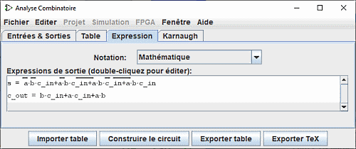
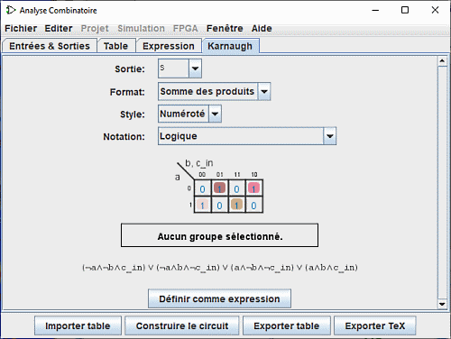

Créer des expressions
Pour chaque variable de sortie, la fenêtre d'analyse combinatoire maintient deux structures: la colonne concernée dans la table de vérité et une expression booléenne. Chaque structure définit comment la sortie dépend de ses entrées. Vous pouvez éditer soit la table de vérité soit l'expression. L'un ou l'autre sera automatiquement mis à jour pour rester consistant.
Comme nous allons le voir sur la page suivante, les expressions booléennes sont particulièrement utiles dans la mesure ou la fenêtre d'analyse combinatoire utilisera ces dernières quand il sera nécessaire d'élaborer le circuit correspondant à la configuration courante.
Vous pouvez voir et éditer les expressions en utilisant les deux derniers onglets de la fenêtre: l'onglet expressions et l'onglet Karnaugh.
L'onglet Expression

L'onglet Expressions vous permet de visualiser et éditer l'expression courante pour chaque variable de sortie. Il présente un sélecteur Notation : et une liste des expressions mathématiques du circuit.
Le sélecteur Notation : modifie le mode de notation des expressions de sortie. Il vous permet cinq types de notation :
- Mathématique :
- Le surligné représente la négation, Le ∙ la fonction ET et le + la fonction OR. ⊕ la fonction XOR
- Logique :
- Le ¬ représente la négation, le ∧ la fonction ET et le ∨ la fonction OU. ⊻ la fonction XOR.
- Logique alternative :
- Le ~ représente la négation, Le ∧ la fonction ET et le ∨ la fonction OR. ≢ la fonction XOR
- Programmation avec des booléens :
- Le ! représente la négation, Le && la fonction ET et le || la fonction OR. != la fonction XOR
- Programmation avec des bits :
- Le ~ représente la négation, Le & la fonction ET et le | la fonction OR. ^ la fonction XOR
Juste en dessous du sélecteur, les expressions sont affichées dans une liste. Vous pouvez éditer l'expression dans le panneau de texte en effectuant un double clic sur la ligne de celle-ci.
Notez que votre table de vérité sera modifiée de manière irrémédiable si vous éditez les expressions et vice versa.
En plus des + et · représentant des AND et des OR, une expression entrée peut contenir des opérateurs logiques C/JAVA ainsi que des mots.
| Priorité la plus haute | ~ ! ' | NOT |
|---|---|---|
| (none) & && | AND | |
| ^ ⊕ | XOR | |
| Priorité la plus basse | + | || | OR |
Les exemples suivants sont tous des représentations valides de la même expression. Il est d'ailleurs aussi possible de mélanger les opérateurs.
| a' (b + c) |
| !a && (b || c) |
| NOT a AND (b OR c) |
En général, des parenthèses dans une séquence de AND de OR ou de XOR n'ont aucun effet. En particulier, quand Logisim génère un circuit, il ignore ces parenthèses.
L'onglet Karnaugh

Le dernier onglet affiche l'expression minimale d'une des colonnes de la table de vérité. Sur ce panneau on trouve présenté quatre sélecteurs, la table de karnaught et l'expression minimale.
Le sélecteur du haut Sortie:, vous pouvez sélectionner la sortie minimisée d'une colonne de la table que vous souhaitez afficher.
Le sélecteur suivant Format: permets d'indiquer si vous souhaitez produire une somme des produits ou un produit des sommes.
le sélecteur Style: modifie la présentation des variables sur les bords de la table. Soit avec des valeurs binaires soit avec des lignes sur les valeurs vraies.

|
| Numéroté |

|
| Doublé |
le sélecteur Notation: à la la même propriété que celui du panneau Expression (voir plus haut)
la table de Karnaugh apparaîtra au centre du panneau. Vous pouvez cliquer la table de Karnaugh pour changer les valeurs correspondantes dans la table de vérité. La table de Karnaugh affichera également les termes sélectionnés pour l'expression minimisée avec un rectangle arrondi superposé semi-transparent.
En dessous, vous trouverez l'expression minimisée elle-même, formatée de la même manière que dans l'onglet Expression. Logisim utilise l'algorithme de Quine-McCluskey pour élaborer l'expression minimisée. Ceci est équivalent à une table de Karnaugh, mais appliqué à un nombre quelconque de variables en entrée.
Le bouton Définir comme expression vous permet de définir l'expression minimisée comme l'expression correspondant à la variable. Comme les modifications à la table de vérité induisent l'expression minimisée pour la colonne en question ceci ne sera habituellement pas nécessaire, mais si vous entrez une expression dans l'onglet Expression, alors c'est une possibilité intéressante de basculer dans l'expression minimisée correspondante.
Suite: Générer un circuit.